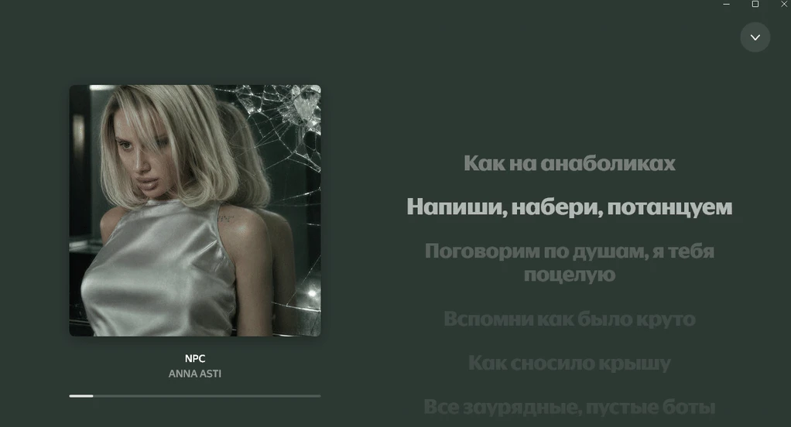

YM
Uncensored
Неофициальный плеер Яндекс Музыки. Подбирает версии русскоязычных треков без цензуры в «Моей волне», альбомах и плейлистах.
Выбрать платформу
Вырезанный вокалСейчас
Слышишь разницу?Поддержать Ex3R ↗
Скачать плеер
Версия 0.2.1Интерфейс плеера

Форк сопровождает Ex3R. Основано на yamusic-rs · Spolzer и порте macOS · M1kage-dev. Исходный код и лицензии. Обратная связь.